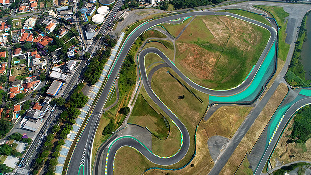

HISTÓRIA
INFLUÊNCIA
ESTRUTURA DA PISTA
CORRIDAS
CURIOSIDADES
SOBRE NÓS

Curiosidades
Emerson Fittipaldi, Nelson Piquet, Ayrton Senna e Felipe Massa são os pilotos brasileiros com o maior número de vitórias no GP do Brasil, cada um conquistando a prova em duas ocasiões
O circuito do Autódromo José Carlos Pace tem um comprimento de 4,309 metro e possui 15 curvas
O Autódromo de Interlagos não se resume apenas ao automobilismo. Ao seu redor, uma área de 4 km de extensão é utilizada para atividades físicas como caminhadas, corridas e ciclismo. O acesso é gratuito e está disponível diariamente, das 6h às 17h (exceto em dias de eventos).
Entre os principais vencedores do GP do Brasil, o francês Alain Prost se destaca com seis vitórias. Em seguida, Michael Schumacher tem quatro triunfos, enquanto Carlos Reutemann e Sebastian Vettel têm três vitórias cada um.